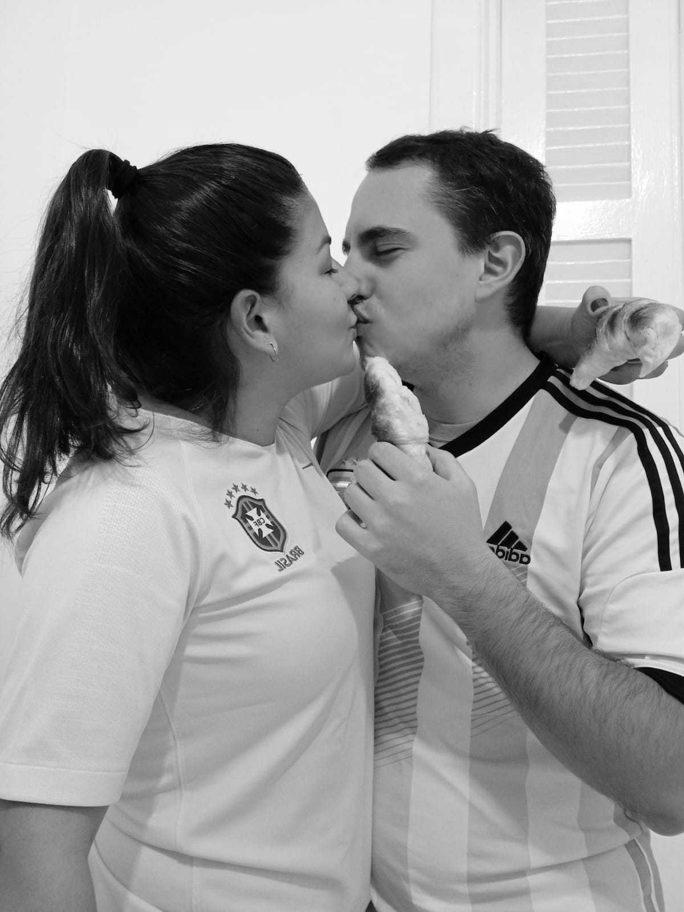

Somos Hernán e Nyara. Argentino e Brasileira que não dispensam um bom café ou um mate para o fim de tarde. Nos conhecemos em 2016 no interior de São Paulo, enquanto trabalhavamos em um projeto multicultural. O amor nasceu, nos mudamos para a Argentina e 2 anos depois, decidimos voltar a viver no Brasil. Decididos a empreender, mas ainda sem muitos planos sobre o que fazer, e entre o amor pela cozinha, o isolamento social e a saudade de terra Natal, nascia a La Folhateria. Em uma tarde chuvosa, entre um mate e outro, veio a vontade de comer uma medialuna. Nós sabíamos que não encontraríamos em nenhum padaria da cidade. Era impossível encontrar uma dessas se não fosse feito de forma caseira, pelas mãos de um legítimo Argentino. Buscamos uma receita na internet e saiu nossa primeira fornada. Ainda com sabor de pãozinho, mas já com carinha de medialuna.
Nesta época, fazíamos apenas para nós, testanto marcas de diversos ingredientes a cada metade de várias receitas. Até o dia em que o formato e o aroma sairam perfeitos, como as que costumávamos comer em Buenos Aires. Enviamos fotos para nossa familia argentina que na mesma hora nos enviou a receita da avó de Hernán, que fazia medialunas para merendar com a familia aos domingos. Nosso segredo vem de família. E desde então, encontramos nossa receita. Nossas medialunas são folhadas com uma casquinha por fora e macias e adocicadas por dentro, com a leveza de uma típica medialuna argentina para rechear ou simplesmente comer acompanhada de um café ou mate.
Aqui uma foto de nós dois!
